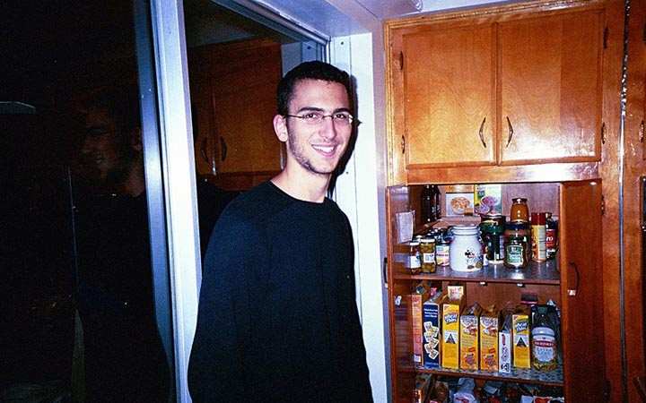
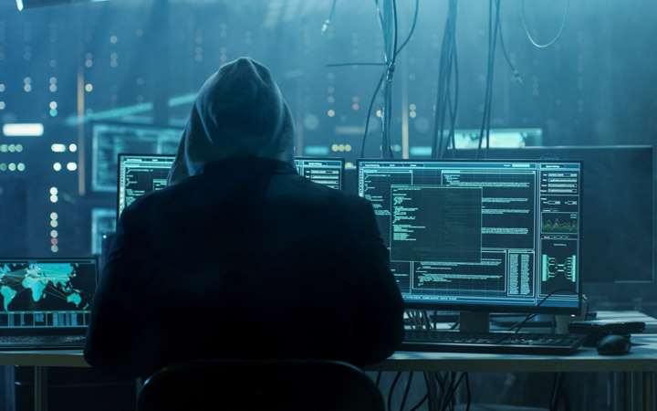
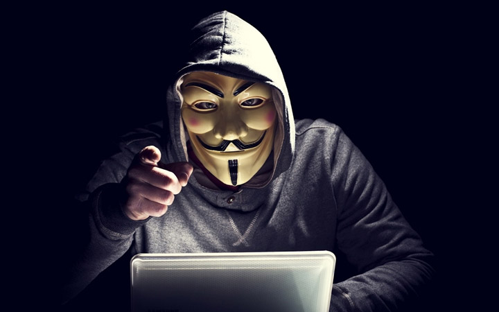

-
Кевин Митник (Kevin Mitnink)
Кевин Митник был, пожалуй, единственным компьютерным хакером, известным даже далеким от компьютеров людям, и одним из самых неуловимых преступников в Соединенных Штатах. На протяжении 80-х годов Митник проникал в компьютерные системы практически всех известных компаний. Его история была настолько удивительна, что стала сюжетом приключенческого триллера «Взлом». После атаки на сеть американской компьютерной компании Digital Equipment Corp. Кевин провел один год в тюрьме и был освобожден под надзор на три года. Однако в конце срока хакер сбежал и в течение последующих двух с половиной лет совершил множество громких взломов, связанных в том числе с хищением корпоративных тайн и атаками на системы оповещения нацбезопасности. В конечном итоге Митник был пойман и приговорен к пяти годам тюремного заключения. После отбытия срока он не вернулся к хакерству (по крайней мере, такой информации нет), стал публичной фигурой и консультантом по компьютерной безопасности, а также написал несколько книг. Сейчас он является владельцем компании Mitnick Security Consulting.
-
Джонатан Джеймс (Jonathan James)
История Джонатана Джеймса (c0mrade) очень трагична. Джеймс начал заниматься хакерством еще будучи подростком — уже тогда он мог взломать любую правительственную или коммерческую сеть — и стал первым несовершеннолетним, попавшим за это в тюрьму. В 1999 году Джеймсу удалось взломать сеть НАСА. Юный хакер смог свободно бродить по сети и украл несколько файлов, включая исходный код международной орбитальной станции. В 2008 году Джеймс Джонатан покончил жизнь самоубийством, предположительно, по причине того, что его обвиняли в совершении атак, к которым он не был причастен. Ходят слухи, что смерть хакера была инсценирована, однако конкретных доказательств этого нет.
-
Кевин Поулсен (Kevin Poulsen)
Dark Dante — ник Келвина Поулсена – хакера, взломавшего телефонную линию одной из американских радиостанций и выигравшего таким образом автомобиль Порше. ФБР заинтересовалось Поулсеном после того, как тот взломал их базу данных и завладел секретной информацией о перехваченных телефонных разговорах. В итоге он был приговорен к 51 месяцу тюремного заключения с возмещением $56 000. После выхода из тюрьмы в 1995 году Поулсен решил изменить свою жизнь и стал журналистом. В 2006 году он помог установить более 700 сексуальных преступников в MySpace. В настоящее время бывший хакер работает редактором журнала Wired.
-
Гуччифер 2.0 (Guccifer 2.0)
Кем именно является хакер по имени Гуччифер 2.0 (Guccifer 2.0), доподлинно неизвестно. Возможно, это один человек, а может быть, группа людей. Во время президентских выборов в США 2016 года им была взломана сеть Национального комитета Демократической партии США, после чего на WikiLeaks и других подобных ресурсах появились сотни секретных документов. Некоторые считают, что осуществивший кибератаку хакер Гуччифер 2.0 – это всего лишь попытка российских спецслужб отвлечь внимание от их участия во взломе. Однако после проведенных исследований было доказано, что Гуучифер – вовсе не россиянин, а румын. Таким образом, Гуччифер – это имя румынского хакера, взломавшего сайт американского правительства и множества других политических организаций. После президентских выборов Гуччифер исчез, появившись снова в январе 2017 г., чтобы доказать, что он (они) не имеют ничего общего с российскими разведслужбами.
-
Анонимус (Anonymous)
На сегодняшний день Анонимус является, пожалуй, самым известным хакером, который, как ни парадоксально это звучит — до сих пор неизвестен. Действовать от имени Анонимуса может любой хакер – по сути, это группа, не имеющая какой-либо иерархии или членства. Начиная с 2003 года Анонимус атаковал множество организаций и систем, таких как PayPal, Amazon, Баптистская церковь Вестборо, компания Sony, сайты глубинного интернета, Церковь саентологии, а также правительства Индии, Австралии, Сирии, Соединенных Штатов и множества других стран. При этом Анонимус до сих пор активен.